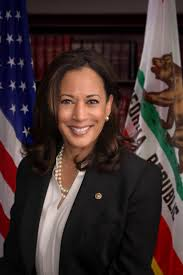

- Name: Kamala Harris
- Political Party: Democratic
- Age: 54
- Date of Birth: October 20, 1964
- Current Position: Junior Senator of California
- Platform:
- Abolish Capital Punishment
- Reform or reduce Cash Bail
- Eliminate Mandatory Minimum Sentences
- Eliminate Private Prisons
- Mandate paper ballots
- Subsidies for renters and homeowners
- Expand tax benefits for middle-class and low-income Americans
- Raise the federal minimum wage to $15/hour
- Support broad paid family and medical leave plans
- Study reparations
- Students shouldn’t have to take on debt
- Expand or fix existing debt-relief programs
- Boost teacher pay
- Unlimited spending should not be allowed in politics
- The Electoral College should be eliminated
- Support developing new nuclear technologies as part of an effort to fight climate change
- Ban fracking everywhere
- Tax carbon emissions
- Endorsed urging Americans to eat less meat as a way to combat climate change
- Support a ban on assault weapons
- In favor of universal background checks
- Few limits on Abortions, if any
- Rethink the whole ACA system
- Support negotiating for Medicare, international reference pricing and promoting generics
- Medicare for All, but would accept Medicare for Some
- Citizenship for Dreamers and executive actions to help them legalize in the meantime
- Repeal the Illegal Entry statute
- Don’t support additional wall funding
- Legalize Marijuana
- Slash the defense budget
- Bring the troops home
- Reverse the 2017 corporate cut
- Expand the EITC
- Impose higher taxes on financial institutions
- We need stricter disclosure requirements for ads online
- We need more investigations first on Tech Competition and Antitrusts
- Demand changes to USMCA
- Don’t use tariffs to pressure countries
- Oppose joining CPTPP or opposed TPP
- Description: Kamala Devi Harris ( born October 20, 1964) is an American lawyer and politician serving as the junior United States Senator from California since 2017. A member of the Democratic Party, she previously served as the 27th District Attorney of San Francisco from 2004 to 2011 and 32nd Attorney General of California from 2011 until 2017. She is a candidate for the Democratic nomination for President of the United States in the 2020 election.
Harris was born in Oakland, California, and is a graduate of Howard University and University of California, Hastings College of the Law. In the 1990s, she worked in the San Francisco District Attorney's Office and the City Attorney of San Francisco's office. In 2004, she was elected District Attorney of San Francisco.
Harris won the election as California's Attorney General in 2010 and was reelected in 2014 by a wide margin. On November 8, 2016, she defeated Loretta Sanchez in the 2016 Senate election to succeed outgoing Senator Barbara Boxer, becoming California's third female U.S. Senator, and the first of either Jamaican or Indian ancestry.[2] Since becoming a Senator, she has supported single-payer healthcare, federal descheduling of cannabis, support for sanctuary cities, the DREAM Act, and lowering the tax burden for the working and middle classes while raising taxes on corporations and the wealthiest one percent of Americans.